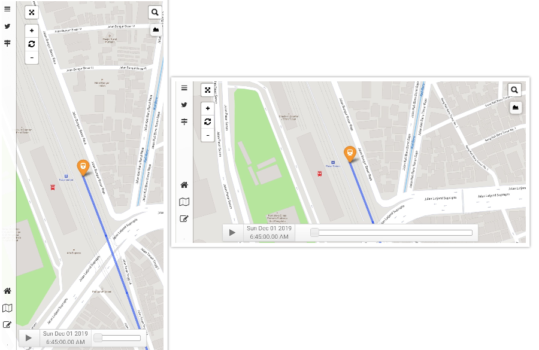

POSISI KERETA
Menampilkan posisi kereta api jurusan Yogyakarta - Jakarta PP berdasarkan pada Grafik Perjalanan Kereta Api (GAPEKA) 2019
Menampilkan posisi kereta api jurusan Yogyakarta - Jakarta PP berdasarkan pada Grafik Perjalanan Kereta Api (GAPEKA) 2019
Halaman website ini berfungsi sebagai penduan penggunaan dari peta online. Terdapat beberapa informasi yang terdapat pada peta online tersebut yaitu:
1. Menampilkan posisi kereta api dengan ikon bergerak sesuai perhitungan interpolasi berdasarkan GAPEKA 2019 dengan pengaturan kontrol waktu selama 24 jam. Daftar kereta api yang ditampilkan bisa dilihat disini.
2. Menampilkan stasiun yang dilewati oleh kereta api jurusan Yogyakarta - Jakarta dilengkapi dengan gambar papan nama stasiun dan ketinggian stasiun. Daftar stasiun yang dilewati KA bisa dilihat disini.
3. Menampiilkan grafik ketinggian dari jaringan rel KA Yogyakarta - Jakarta yang terhubung dengan peta online.
4. Menampilkan lokasi beserta komplain dari pelanggan yang ditujukan kepada akun resmi PT. KAI yaitu @kai121 pada media sosial Twitter.
| NO. | NAMA KA | NO. KA | JURUSAN (STASIUN) | JAM BERANGKAT | JAM TIBA |
|---|---|---|---|---|---|
| 1 | TAKSAKA | 83 | YOGYAKARTA - GAMBIR | 09.00 WIB | 16.42 WIB |
| 2 | TAKSAKA | 84 | GAMBIR - YOGYAKARTA | 09.30 WIB | 17.10 WIB |
| 3 | TAKSAKA | 85 | YOGYAKARTA - GAMBIR | 21.00 WIB | 04.45 WIB |
| 4 | TAKSAKA | 86 | GAMBIR - YOGYAKARTA | 21.30 WIB | 05.02 WIB |
| 5 | BOGOWONTO | 141 | LEMPUYANGAN - PASAR SENEN | 09.45 WIB | 18.24 WIB |
| 6 | BOGOWONTO | 142 | PASAR SENEN - LEMPUYANGAN | 21.45 WIB | 06.07 WIB |
| 7 | GAJAHWONG | 143 | LEMPUYANGAN - PASAR SENEN | 18.10 WIB | 02.29 WIB |
| 8 | GAJAHWONG | 144 | PASAR SENEN - LEMPUYANGAN | 06.45 WIB | 15.08 WIB |
| 9 | FAJAR UTAMA YK | 145 | YOGYAKARTA- PASAR SENEN | 07.00 WIB | 15.11 WIB |
| 10 | FAJAR UTAMA YK | 146 | PASAR SENEN - YOGYAKARTA | 07.20 WIB | 15.29 WIB |
| 11 | SENJA UTAMA YK | 147 | YOGYAKARTA- PASAR SENEN | 19.14 WIB | 03.01 WIB |
| 12 | SENJA UTAMA YK | 148 | PASAR SENEN - YOGYAKARTA | 18.55 WIB | 03.07 WIB |
| 13 | PROGO | 307 | LEMPUYANGAN - PASAR SENEN | 15.20 WIB | 23.54 WIB |
| 14 | PROGO | 308 | PASAR SENEN - LEMPUYANGAN | 22.30 WIB | 06.52 WIB |
| NO. | STASIUN | NO. | STASIUN | NO. | STASIUN | NO. | STASIUN | NO. | STASIUN | NO. | STASIUN | NO. | STASIUN |
|---|---|---|---|---|---|---|---|---|---|---|---|---|---|
| 1 | Gambir
| 12 | Klari
| 23 | Haurgeulis
| 34 | Cirebon Prujakan
| 45 | Patuguran
| 56 | Ijo
| 67 | Jenar
|
| 2 | Pasar Senen
| 13 | Kosambi
| 24 | Cilegeh
| 35 | Luwung
| 46 | Karangsari
| 57 | Gombong
| 68 | Wojo
|
| 3 | Manggarai
| 14 | Dawuan
| 25 | Kadokangabus
| 36 | Sindanglaut
| 47 | Karanggandul
| 58 | Karanganyar
| 69 | Wates
|
| 4 | Jatinegara
| 15 | Cikampek
| 26 | Terisi
| 37 | Ciledug
| 48 | Purwokerto
| 59 | Sruweng
| 70 | Sentolo
|
| 5 | Cakung
| 16 | Tanjungrasa
| 27 | Telagasari
| 38 | Ketanggungan
| 49 | Notog
| 60 | Soka
| 71 | Rewulu
|
| 6 | Bekasi
| 17 | Pabuaran
| 28 | Jatibarang
| 39 | Larangan
| 50 | Kebasen
| 61 | Kebumen
| 72 | Patukan
|
| 7 | Tambun
| 18 | Pringkasap
| 29 | Kertasemaya
| 40 | Songgom
| 51 | Randegan
| 62 | Wonosari
| 73 | Yogyakarta
|
| 8 | Cikarang
| 19 | Pasirbungur
| 30 | Arjawinangun
| 41 | Prupuk
| 52 | Kroya
| 63 | Kutowinangun
| 74 | Lempuyangan |
| 9 | Lemahabang
| 20 | Cikaum
| 31 | Bangoduwa
| 42 | Linggapura
| 53 | Kemranjen
| 64 | Prembun
| ||
| 10 | Kedunggedeh
| 21 | Pegadenbaru
| 32 | Cangkring
| 43 | Bumiayu
| 54 | Sumpiuh
| 65 | Butuh
| ||
| 11 | Karawang
| 22 | Cipunegara
| 33 | Cirebon
| 44 | Kretek
| 55 | Tambak
| 66 | Kutoarjo
|

Posisi Kereta
Untuk membuat kereta bergerak tekan tombol .
Untuk mengubah waktu dapat dilakukan dengan menggeser tombol  dengan kursor atau ketikkan waktu dengan menekan kolom waktu kemudian klik ikon jam setelah waktu diganti . Untuk memunculkan nama kereta klik pada ikon kereta.
dengan kursor atau ketikkan waktu dengan menekan kolom waktu kemudian klik ikon jam setelah waktu diganti . Untuk memunculkan nama kereta klik pada ikon kereta.
Mencari Stasiun
Untuk memunculkan tab pencarian stasiun tekan tombol kemudian ketikkan nama stasiun yang terdapat pada tabel diatas, maka akan muncul popup papan nama stasiun. Klik nama stasiun yang berwarna biru untuk langsung terhubung dengan Google Maps.
Grafik Ketinggian Rel
Untuk memunculkan grafik tekan tombol  , kemudian arahkan kursor ke grafik maka akan muncul juga nilai ketinggian pada peta tepat di lokasi kursor diletakkan pada grafik.
, kemudian arahkan kursor ke grafik maka akan muncul juga nilai ketinggian pada peta tepat di lokasi kursor diletakkan pada grafik.
Komplain Keterlambatan
Menu untuk komplain keterlambatan terdapat pada side bar dengan ikon  . Terdapat kolom pencarian lokasi komplain dan diagram jumlah komplain. Untuk mengaktifkan layer keseluruhan komplain bisa aktifkan layer Total Komplain, sedangkan untuk komplain setiap bulan bisa dilihat pada layer dibawah grafik. klik pada marker untuk melihat komplain dan tekan gambar untuk langsung melihat pada website Twitter.
. Terdapat kolom pencarian lokasi komplain dan diagram jumlah komplain. Untuk mengaktifkan layer keseluruhan komplain bisa aktifkan layer Total Komplain, sedangkan untuk komplain setiap bulan bisa dilihat pada layer dibawah grafik. klik pada marker untuk melihat komplain dan tekan gambar untuk langsung melihat pada website Twitter.

Posisi Kereta
Untuk membuat kereta bergerak tekan tombol . Untuk mengubah waktu dapat menggeser kolom dengan cara menekan kolom yang kosong atau ketikkan waktu dengan menekan kolom waktu kemudian klik ikon jam setelah waktu diganti . Untuk memunculkan nama kereta klik pada ikon kereta.
Mencari Stasiun
Untuk memunculkan tab pencarian stasiun tekan tombol kemudian ketikkan nama stasiun yang terdapat pada tabel di atas, maka akan muncul popup papan nama stasiun. Tekan nama stasiun yang berwarna biru untuk langsung terhubung dengan Google Maps.
Grafik Ketinggian Rel
Untuk memunculkan grafik tekan tombol  , kemudian tekan grafik maka akan muncul juga nilai ketinggian pada peta tepat di lokasi grafik ditekan.
, kemudian tekan grafik maka akan muncul juga nilai ketinggian pada peta tepat di lokasi grafik ditekan.
Komplain Keterlambatan
Menu untuk komplain keterlambatan terdapat pada side bar dengan ikon  . Terdapat kolom pencarian lokasi komplain dan diagram jumlah komplain. Untuk mengaktifkan layer keseluruhan komplain bisa aktifkan layer Total Komplain, sedangkan untuk komplain setiap bulan bisa dilihat pada layer dibawah grafik. klik pada marker untuk melihat komplain dan tekan gambar untuk langsung melihat pada website Twitter.
. Terdapat kolom pencarian lokasi komplain dan diagram jumlah komplain. Untuk mengaktifkan layer keseluruhan komplain bisa aktifkan layer Total Komplain, sedangkan untuk komplain setiap bulan bisa dilihat pada layer dibawah grafik. klik pada marker untuk melihat komplain dan tekan gambar untuk langsung melihat pada website Twitter.
SHARE THIS PAGE!